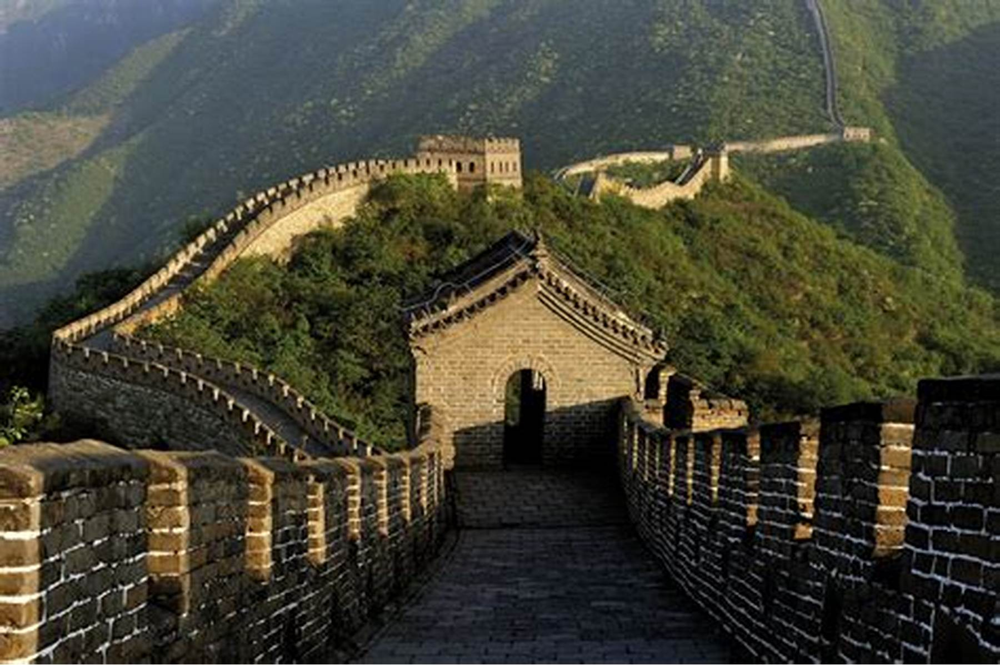
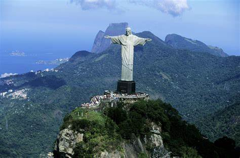
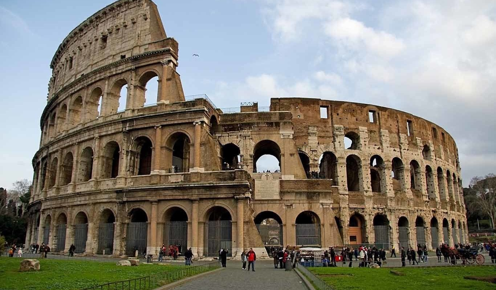
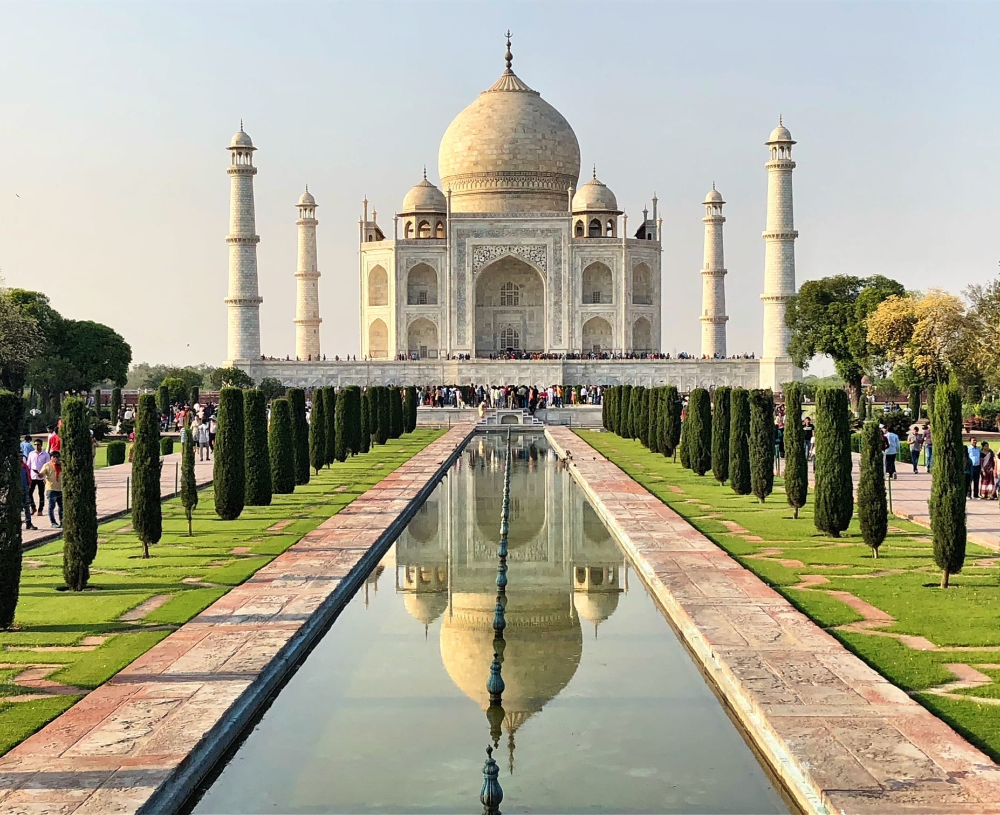
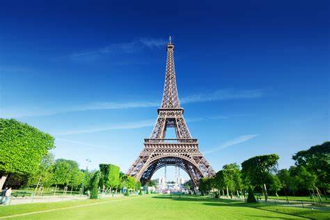
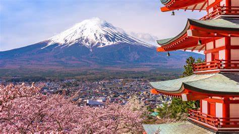
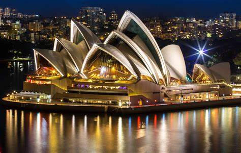
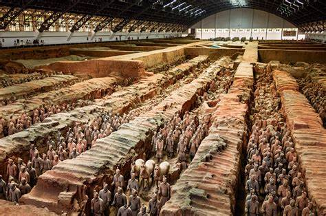

Sugerencia antes de empezar su lectura
Un lugar turístico se refiere a un destino o área que atrae a visitantes y turistas debido a su belleza natural, arquitectura, historia, cultura, o actividades recreativas. Estos lugares pueden ser ciudades, pueblos, islas, bosques, montañas, ríos, mares, o cualquier otro lugar que se considera atractivo para los viajeros. Los lugares turísticos pueden ser naturales, como parques nacionales o monumentos naturales, o artificiales, como ciudades históricas o complejos turísticos.
Entre estos están:
Es una antigua fortificación china, construida y reconstruida entre el siglo V a.C.
Es una estatua art déco que representa a Jesús de Nazaret.
Es considerada una proeza de ingeniería construida en el siglo I por orden del emperador Vespasiano.
Se trata de un imponente mausoleo de mármol blanco edificado entre los años 1631 y 1648 por orden del emperador mogol Shah Jahan para perpetuar la memoria de su esposa favorita.
Es la torre más famosa del mundo tiene una altura arquitectónica de 300 metros, elevándose a 324 metros al incluir su antena.
Es el principal símbolo geográfico japonés visible desde Tokio con tiempo despejado.
Es el ícono arquitectónico de Sídney,
Es un monumental conjunto de más de 8.000 figuras en tamaño real de guerreros y caballos de terracota, encontrado casualmente en 1974 cerca de la ciudad china de Xi’an
